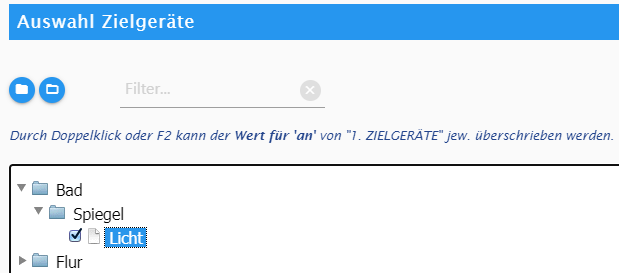

Smart Control
Controlling ioBroker smarter…
Start
Willkommen beim Smart-Control-Adapter. Aktueller ioBroker-Forum-Artikel: ioBroker Forum: Smart Control.
Dokumentation / Anleitung zu diesem Adapter:
-
Ziel-Geräte
help_outline
| ✓ | Geräte-Name | Datenpunkt zum einschalten | Wert für 'an' | Prüfung deakiv. | Datenpunkt zum ausschalten | Wert für 'aus' | Prüfung deakiv. |
|---|
-
Zusätzliche Bedingungen
help_outline
| ✓ | Name der Bedingung | Datenpunkt der Bedingung | DP-Wert |
|---|
-
Bewegungsmelder
help_outline
| ✓ | Name für Bewegungsmelder | Datenpunkt Bewegungsmelder | Sek | timer_off | Datenpunkt Helligkeit | Grenze |
|---|
-
Andere Auslöser
help_outlineHier erfasst du andere Geräte als Auslöser, wie Wandschalter, das Betreten der Wohnung, Küchenfenster wird geöffnet, usw.
Spalte Pflichtfeld Beschreibung ✓ Ja Aktiviert/Deaktiviert diese Tabellenzeile. Falls nicht aktiviert, wird diese Tabellenzeile vom Adapter nicht beachtet. In den Adapter-Optionen, unter 'WEITERE OPTIONEN > Eingabe-Validierung' kannst du übrigens einstellen, dass auch deaktivierte Zeilen auf Gültigkeit geprüft werden. Name Ja Beliebiger Name. SC Ja Siehe Datenpunkt. Datenpunkt Ja Ein existierender Datenpunkt als Auslöser.
Falls du die Option SC aktivierst, wird der Datenpunkt unterhalb vonsmartcontrol.x.userstatesangelegt, d.h. wenn du hier z.B.Bad.Radio.Aneinträgst, dann wird hierfür der Datenpunktsmartcontrol.x.userstates.Bad.Radio.Anangelegt, mit dem du dann das ganze auslösen kannst, in dem du den Datenpunkt enstprechend DP-Wert setzt. Der Datenpunkt wird als Typ 'String' angelegt, außer es isttrueoderfalsein DP-Wert, dann wird dieser als 'boolean' angelegt.
Anwendungsfall hierfür: Etwa brauchst du einen Datenpunkt zum auslösen, also z.B. 'Heimkino an', der z.B. von Alexa getriggert wird. Hiermit ersparst du dir also, dass du deswegen manuell noch Datenpunkte anlegen musst.DP-Wert Ja Sobald der Wert vom Datenpunkt mit diesem Wert übereinstimmt, wird der Auslöser aktiviert.
Du kannsttrue,false, Nummern wie144, or Strings wieABCDEFverwenden.
Ebenso kannst du die Vergleichs-Operatoren<,>,>=und<=vor Zahlen schreiben.
Um also auszulösen, wenn z.B. die Temperatur größer als 20°C ist, trägst du>20ein.
Sämtliche Leerzeichen und Anführungszeichen (wie") am Anfang und Ende werden automatisch entfernt.Ziel aus? Nein Normalerweise werden die Ziel-Geräte beim Auslösen eingeschaltet (1. ZIELGERÄTE > 'Datenpunkt zum einschalten' / 'Wert für an'). Wenn du den Haken aktivierst, werden die Ziele nicht ein- sondern ausgeschaltet (1. ZIELGERÄTE > 'Datenpunkt zum ausschalten' / 'Wert für aus').
Hinweis: Falls "Toggle?" gesetzt ist, wird diese Option ignoriert.Toggle? Nein Falls aktiviert, ermöglicht dies einen Taster (Toggle) als Auslöser. Wenn die Zielgeräte aus sind, werden sie vom Auslöser eingeschaltet, und umgekehrt (wenn sie ein sind, werden sie ausgeschaltet).
Der Adapter verwendet zur Ermittlung, ob das Gerät bereits an ist, den "Datenpunkt zum einschalten" unter "1. ZIELGERÄTE".
Hinweis: Falls gleichzeitig "Ziel aus?" aktiviert ist, wird die "Ziel aus?"-Option ignoriert, das würde sonst auch keinen Sinn ergeben für einen "Toggle".
| ✓ | Name | SC | Datenpunkt | DP-Wert | Ziel aus? | Toggle? |
|---|
-
Zeitabhängige Auslöser
help_outlineDiese Auslöser aktivieren, sobald die entsprechende Zeit eintritt.
Spalte Pflichtfeld Beschreibung ✓ Ja Aktiviert/Deaktiviert diese Tabellenzeile. Falls nicht aktiviert, wird diese Tabellenzeile vom Adapter nicht beachtet. In den Adapter-Optionen, unter 'WEITERE OPTIONEN > Eingabe-Validierung' kannst du übrigens einstellen, dass auch deaktivierte Zeilen auf Gültigkeit geprüft werden. Name des Auslösers Ja Beliebiger Name. Zeit Ja Hier kannst du eine Uhrzeit in Stunde/Minute, wie 23:30, eingeben. Außerdem kannst du einen Astro-Namen wiesunseteingeben und dabei einen Versatz ("Offset") in Minuten hinzufügen, z.B.goldenHourEnd+30odersunset-60.
Die aktuellen Astrozeiten findest du übrigens als Info-Datenpunkte in diesem Adapter:smartcontrol.x.info.astroTimes.
Außerdem kannst du hier Cron verwenden, also z.B.5 4 * * *. Zum einfachen Ermittlung der zu verwendeten Cron-Syntax kannst du z.B. folgende Website verwenden: Crontab.guru.
Für Stunde/Minute (wie23:30) oder Astrozeiten (wiesunset) ist die Ausführung jeden Tag. In "4. ZONEN" kannst du das dann weiter entsprechend limitieren.Zusätzlich muss erfüllt sein Nein Hier kannst du zusätzliche Bedingungen eintragen, die zusätzlich zutreffen müssen, z.B.: Jemand ist anwesend, Heute ist Feiertag, Oma schläft, usw. done_all Nein Für Zusätzlich muss erfüllt sein: Wenn aktiviert, müssen alle Bedingungen zutreffen ('und'). Wenn deaktiviert, reicht es, wenn eine der Bedingungen zutrifft.
Falls du nur eine Bedingung auswählst, ist es egal, ob du das aktivierst oder nicht.Nie auslösen wenn... Nein Hier kannst du zusätzliche Bedingungen eintragen, die nie zutreffen dürfen, z.B.: Keiner zu Hause, Radio läuft, usw. done_all Nein Für Nie auslösen wenn...: Wenn aktiviert, müssen alle Bedingungen zutreffen ('und'). Wenn deaktiviert, reicht es, wenn eine der Bedingungen zutrifft.
Falls du nur eine Bedingung auswählst, ist es egal, ob du das aktivierst oder nicht.Ziel aus? Nein Normalerweise werden die Ziel-Geräte beim Auslösen eingeschaltet (1. ZIELGERÄTE > 'Datenpunkt zum einschalten' / 'Wert für an'). Wenn du den Haken aktivierst, werden die Ziele nicht ein- sondern ausgeschaltet (1. ZIELGERÄTE > 'Datenpunkt zum ausschalten' / 'Wert für aus').
| ✓ | Name des Auslösers | Zeit | Zusätzlich muss erfüllt sein | done_all | Nie auslösen wenn... | done_all | Ziel aus? |
|---|
-
Zonen
help_outlineHier definierst du alle "Zonen" (z.B. Badezimmer 1.OG, Kaffeeecke, usw.) und weist Auslöser und zu schaltende Zielgeräte zu.
Spalte Pflichtfeld Beschreibung ✓ Ja Aktiviert/Deaktiviert diese Tabellenzeile. Falls nicht aktiviert, wird diese Tabellenzeile vom Adapter nicht beachtet. In den Adapter-Optionen, unter 'WEITERE OPTIONEN > Eingabe-Validierung' kannst du übrigens einstellen, dass auch deaktivierte Zeilen auf Gültigkeit geprüft werden. Name der Zone Ja Beliebiger Name für die Zone. Auslöser Ja Wähle hier einen oder mehrere Auslöser aus, um dieser Zone zuzuordnen. Zu schaltende Zielgeräte Ja Wähle hier ein oder mehrere zu schaltende Zielgeräte aus, die geschalten werden, sobald ein Auslöser auslöst und die Bedingungen zutreffen.
Mit dem blauen Button links daneben kannst du bei vielen Zielgeräten deutlich schneller auswählen. Es öffnet sich ein Dialog, in dem du die Zielgeräte leichter finden, filtern und auswählen kannst.
Zielwerte überschreiben: Im Dialog der erscheint, wenn man auf den blauen Button links daneben klickt, kann man durch Doppelklick oderF2denWert für 'an'von "1. ZIELGERÄTE" jeweils überschreiben, in dem man da einfach den neuen Zielwert einträgt. Dieser erscheint dann in geschweiften Klammern hinter dem Namen, z.B.Bad.Licht.Decke {33%}.

Tipp: Wähle im Reiter "1. ZIELGERÄTE" für die Zielgeräte-Namen Punkte als Trennung und organisere diese z.B. nach Räumen und Geräten, z.B. "Wohnzimmer.Lichter.Decke", "Wohnzimmer.Lichter.Wand links", etc. Damit werden dir hier die Zielgeräte dann als Ordner angezeigt: "Wohnzimmer > Lichter > Decke", etc.Aus nach x sec Nein Normalerweise wird nur wieder automatisch ausgeschaltet, wenn ein Bewegungsmelder die Zone erfolgreich ausgelöst hat.
Wenn hier eine Anzahl Sekunden eingetragen ist, wird jedes Mal ein Timer mit dieser Anzahl Sekunden gestartet, sobald die Zone aktiviert wird. Nach dieser Anzahl an Sekunden wird dann ausgeschaltet, es sei denn es gibt zwischendurch wieder eine Auslösung der Zone.
Durch leer lassen oder0wird diese Option ignoriert.Ausführung Ja Durch Klicken auf diesen Button öffnet sich ein Dialog, in dem du weitere Bedingungen definieren kannst, wann die in der Zone definierten Zielgeräte geschaltet werden, sobald ein Auslöser auslöst. Detail-Informationen findest du hierzu in diesem Dialog. Immer Ja Diese Option ist identisch mit "Immer ausführen" im Dialog 'Ausführung' (siehe oben): Falls aktiviert, dann wird immer ausgeführt, sofern etwaige zuvor definierte Bedingungen zutreffen. Falls nicht aktiviert, musst du im Dialog 'Ausführung' mindestens eine Zeile anlegen.
| ✓ | Name der Zone | Auslöser | Zu schaltende Zielgeräte | Aus nach x sek | Ausführung | Immer |
|---|
Weitere Adapter-Optionen
Hier sind weitere Adapter-Optionen.
-
expand_more
Bewegungsmelder
Helligkeit (Bri) nicht prüfen falls Zone an
Für Bewegungssensoren und zugehörige Helligkeits-Datenpunkte kannst du hier definieren, ob die Helligkeit ignoriert werden soll, falls eine zugehörige Zone bereits an ist.
Use Case (Anwendungsfall): 'Grenze' ist der oberere Schwellwert der Helligkeit, über dem nicht mehr eingeschaltet wird wenn der Bewegungsmelder auslöst. Dies ist jedoch nicht praxisnah, wenn der Bewegungsmelder z.B. Lichter schaltet, denn dann werden keine wiederkehrenden Bewegungen mehr erkannt, falls Licht an und 'Bri' höchstwahrscheinlich damit überhalb des Schwellwertes ist.
Mit Aktivierung dieser Option wird die Helligkeit nicht überprüft, falls eine zugehörige Zone bereits an ist. -
expand_more
Zeitplan und Astro
Astro-Zeiten 'night' und 'nightEnd'
Je nach den geographischen Koordinaten, die in den ioBroker-Admin-Optionen gesetzt sind, gibt es z.B. in Deutschland im Sommer teils kein
nightundnightEnd. Wenn du das hier aktivierst, dann wird in diesem Fall als night = '00:00' gesetzt, und als nightEnd = '02:00' -
expand_more
Auslöser
Auslöser-Datenpunkte unterhalb von User-Datenpunkten wie javascript.x, 0_userdata.0, Messwerte.0, alias.x
Änderungen von Datenpunkten, die unterhalb von Adapter-Instanzen sind, werden nur getriggert, wenn acknowledge (ack) =
true(also States gültig/bestätigt sind).
Für user-eigene Datenpunkte unterhalb javascript.x, 0_userdata.0, Messwerte.0, alias.0 usw. kann man das hier ändern.
Achtung: Falls "Egal (ack:true oder ack:false)" ausgewählt wird, wird ggf. doppelt geschaltet, wenn ack:false und kurz darauf ack:true gesetzt wird. Dieser Adapter verhindert das aber mit der Option Auslöser ignorieren, falls letzes Auslösen desselben Auslösers vor weniger als x Sekunden war.Auslöser ignorieren, falls letzes Auslösen desselben Auslösers vor weniger als x Sekunden war
Aus Stabilitätsgründen werden Auslöser ignoriert, wenn diese bereits vor weniger als x Sekunden ausgelöst haben. Du kannst diese Anzahl Sekunden hier anpassen. Weniger als 1 Sekunde ist nicht erlaubt.
Sekunde(n) -
expand_more
Log-Ausgaben
Erweitere Info-Log-Ausgaben
Wenn deaktiviert, werden im Log (Level 'Info') nur wenige Informationen beim Adapter-Start und Stop/Neustart angezeigt und alle weiteren Informationen nur im Debug-Log.
Wenn aktiviert, werden im Log (Level 'Info') erweiterte Informationen ausgegeben (aber weniger, als im Debug-Log). -
expand_more
Eingabe-Validierung
Überprüfe auch deaktivierte Tabellenzeilen
Mit Aktivieren dieser Option werden auch deaktivierte Tabellenzeilen auf Gültigkeit geprüft (z.B. ob Datenpunkt existiert, etc.). Dies kann sinnvoll sein, weil du über die Datenpunkte unterhalb
smartcontrol.x.options.Tabellenzeilen aktivieren kannst. Damit wird also schon im Vorfeld geprüft, ob diese gültig sind, und nicht erst bei Aktivierung über die Datenpunkte.